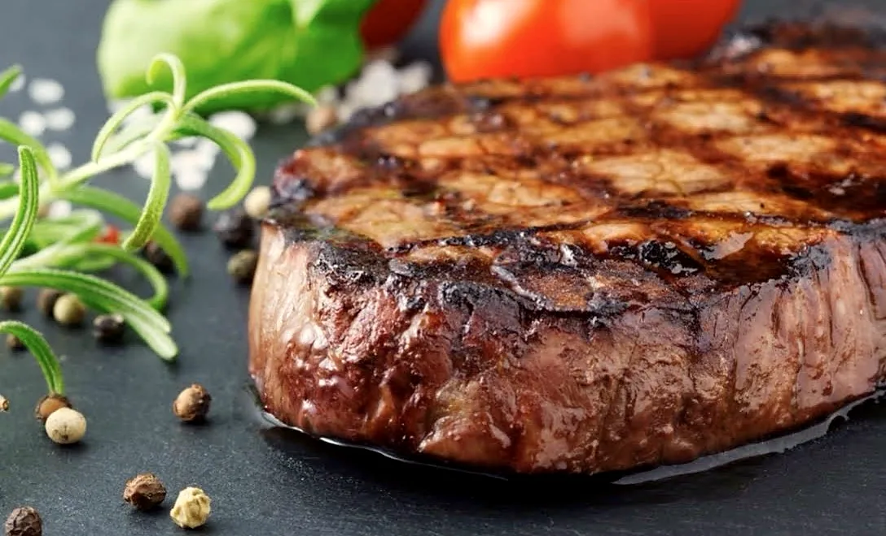
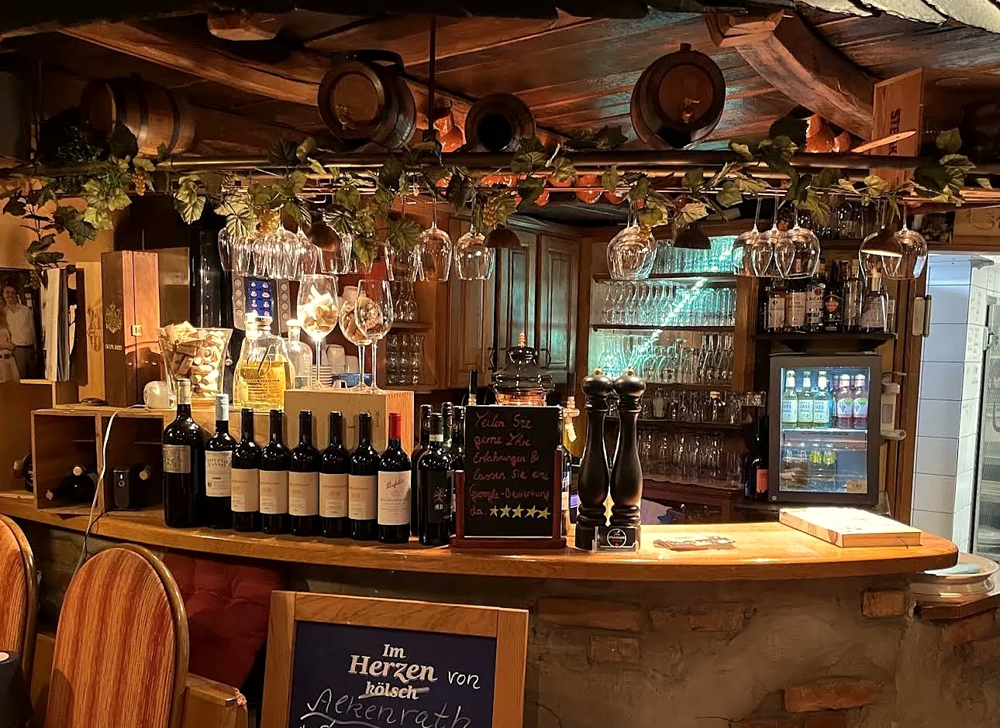
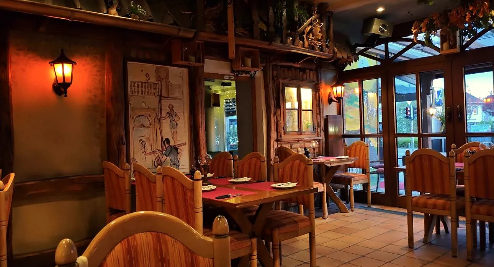
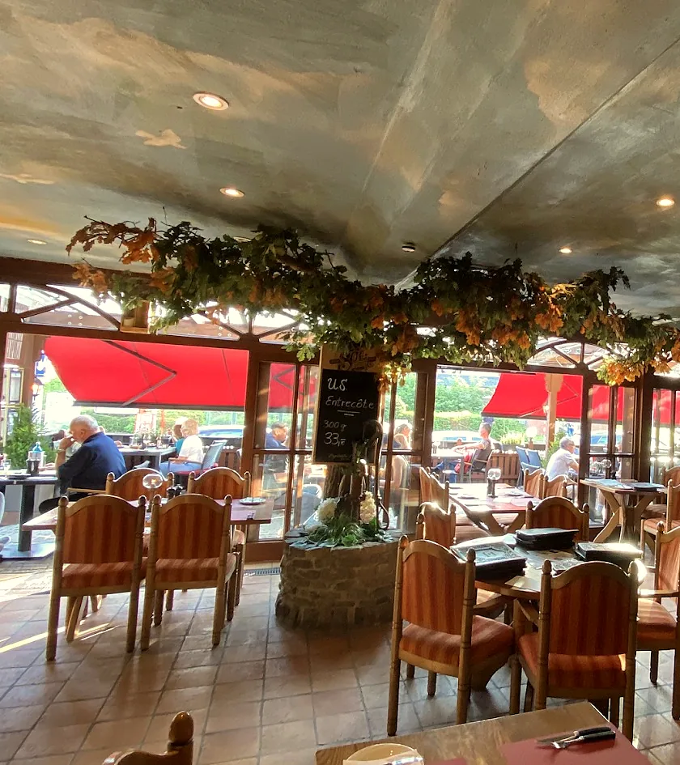
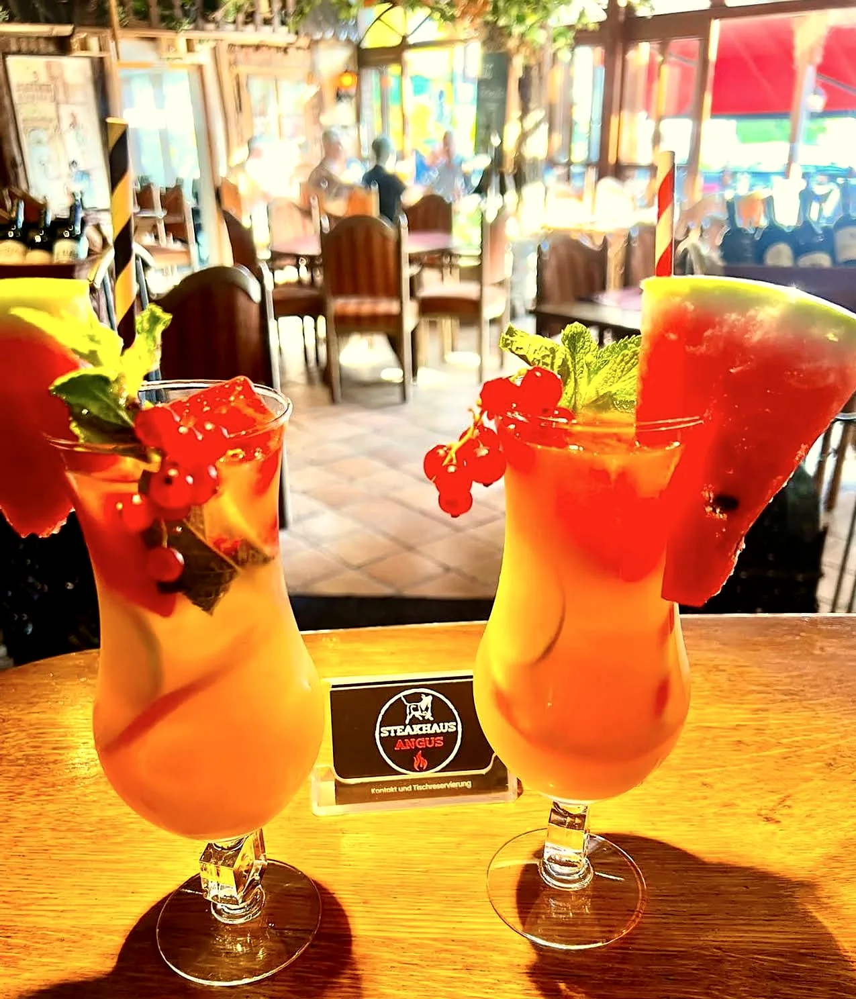
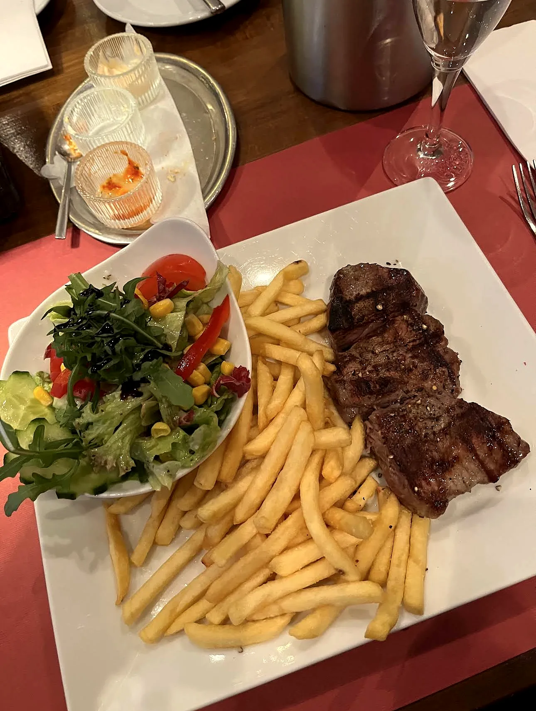
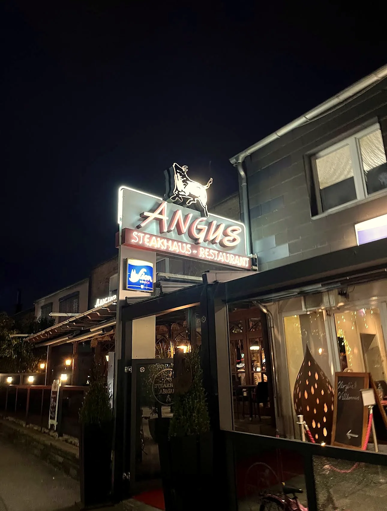

ANGUS
Steak. Feuer. Geschmack.
Steakhaus-Restaurant ANGUS · Leverkusen
Hochwertiges Fleisch, perfekt gegrillt und serviert in echter Steakhouse-Atmosphäre.
- 4,8 ★ Durchschnittliche Bewertung
- 2.318+ Bewertungen
- 30–60 € pro Person
- Leverkusen Alkenrather Str. 6
Von Gästen geschätzt. Für Steakliebhaber gemacht.


01 — Die Geschichte
The Angus
Experience
„Ein guter Steakabend beginnt nicht erst beim ersten Bissen.“
Er beginnt mit dem Licht, das auf Holz und Backstein fällt. Mit dem Duft vom Grill. Mit einem Tisch, der auf dich wartet.
- 01Hochwertige Steaks
- 02Zertifizierte Quellen
- 03Saisonale Wildspezialitäten
- 04Hochwertige Beilagen
- 05Gemütliches Ambiente
- 06Aufmerksamer Service
02 — Das Fleisch
Meat worth
coming for.
03 — Das Feuer
From fire
to flavor.
„Wenn Hitze auf hochwertiges Fleisch trifft, entsteht mehr als ein Steak.“
Perfectly
grilled.
Mehr muss man manchmal nicht sagen.
05 — Die Atmosphäre
Mehr als
ein Abendessen.




06 — Gästestimmen
4,8 / 5
★★★★★
2.318 Bewertungen
„Rumpsteak war aufm Punkt, Pommes sehr lecker und der Salat ein Traum.“
„Gemütliches Lokal mit sehr freundlicher und aufmerksamer Bedienung.“
„Sehr gutes Steak, perfekt gebraten und leckere Beilagen.“
Dein Tisch. Dein Abend. Dein Steak.
Bereit für einen Abend bei ANGUS?
Online über Quandoo – oder telefonisch unter 0214 2029955
Kontakt & Anfahrt
Wir freuen uns
auf dich.
51377 Leverkusen 0214 2029955
- Sitzplätze im Freien
- Hunde erlaubt
- Speisekarte für Kinder